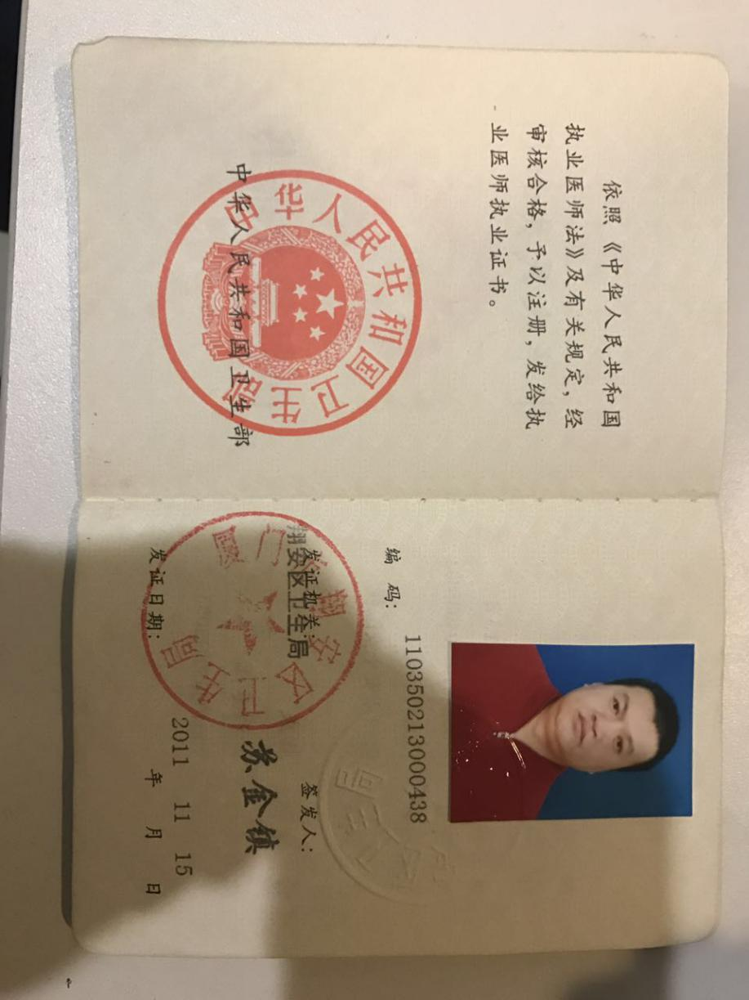
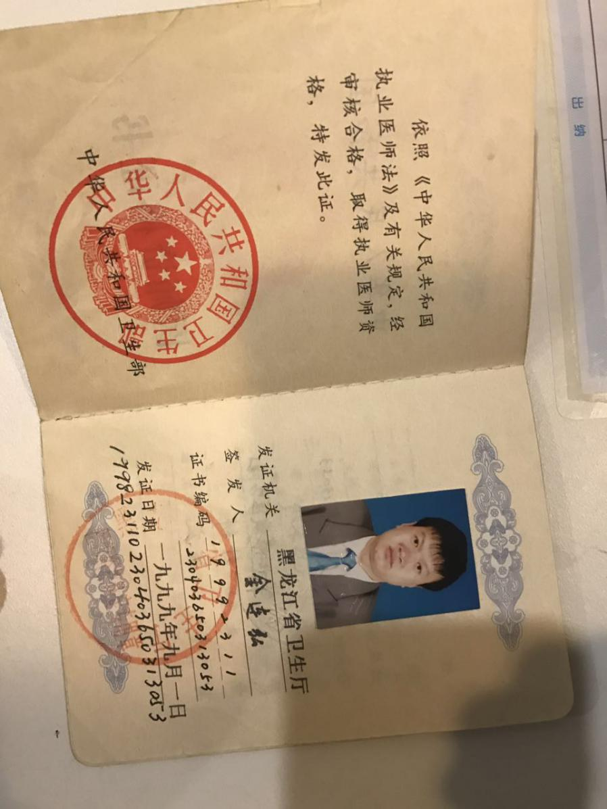
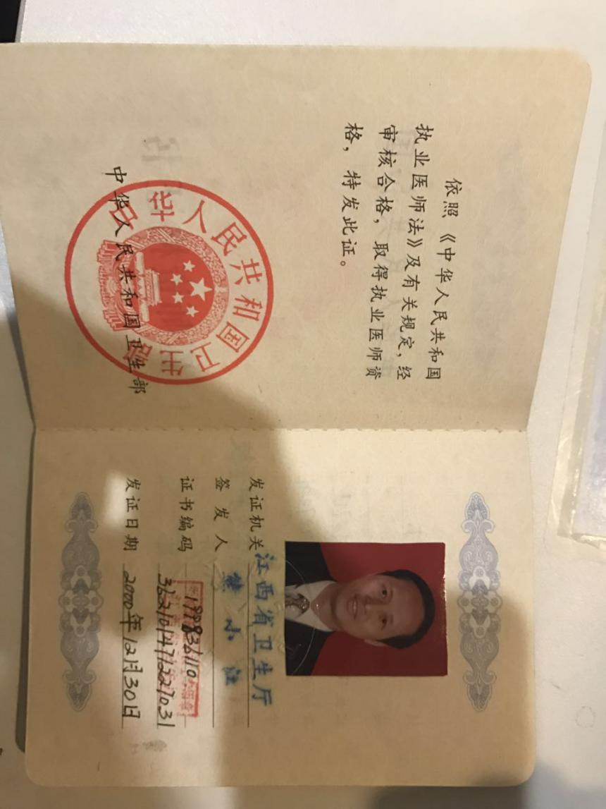
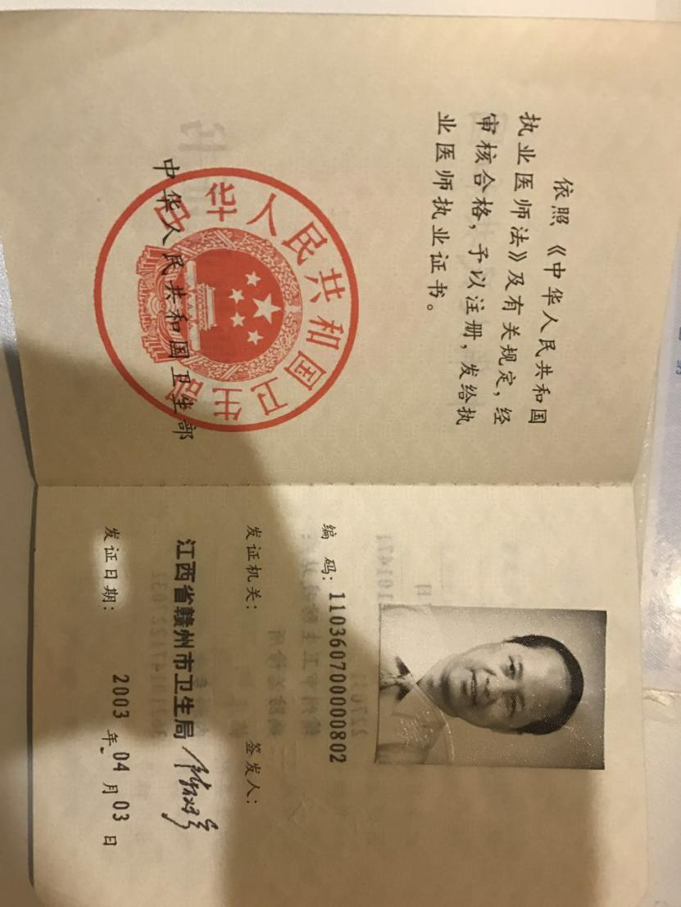

回来啦社区APP园区健康版块由杭州蓝熙健康管理公司管理运营，为绿城业主提供健康档案的建立、保存与查阅、开通线上医生咨询通道、预约蓝熙远程医疗服务、选购体检套餐以及体检报告解读等服务，长期维护园区健康，提高业主健康水平。
蓝熙健康成立于2014年9月，由蓝城集团、回来啦社区和东软熙康共同投资组建。 蓝熙健康秉承着“以科技和服务护佑健康人生”的企业愿景，以物联网技术为核心，智能服务平台为支撑，以具备医疗资质的健康管理中心、运动中心及家庭健康智能设备为载体，专注于为个人、家庭、企业、社区提供最优质的专业健康管理、医疗、养老服务。
个人电子健康档案，记录最全面的健康状况，包含蓝熙问安设备检测数据、用药记录、生活习惯、过敏史、既往病史以及您的蓝熙专属健管师等，各项数据永久保存。口袋化健康档案，随时随地一键查询。
蓝熙家庭医生在线答疑解惑，提供专业且权威的服务，为您带来更具针对性的一站式健康解决方案，包括饮食、运动、用药、就医等建议，从而帮助改善健康状况，降低疾病风险。
部分在线医生相应证件如下：    园区业主可以在线申请预约或咨询远程医疗服务，帮助业主通过影像会诊、视频连线等方式，轻松与名医面对面。蓝熙远程医疗依托东软熙康远程医疗平台支持，汇聚数500家国内一流医院及3022位领域专家，覆盖16个专业领域全国排名前十的知名科室，已签约36家世界顶级的海外诊疗医院。
蓝熙健康管理中心具备中西医综合门诊部资质，拥有优越的体检环境、专业的医护团队、国际高端的医疗检测设备，采用信息化管理系统，轻松实现手机预约体检、定制个性化体检方案，以及一对一报告解读服务等。
（目前，支持线上查询蓝熙健康体检报告、绿城心血管病医院体检报告、美年大健康体检报告）
针对海外医疗需求，我们为业主提供海外医疗和医美资源对接。
通过调用手机自带的计步数据，每日行走步数达到8000步和12000步可分别领取对应的奖励。奖励为平台的红包或平台上的小礼品。
1.您使用回来啦社区APP园区健康板块时，根据要求提供的个人信息。
2.在您使用或访问回来啦社区APP园区健康板块时，客户端自动接收并记录的您浏览器上的服务器数据，包括但不限于IP地址、网站或客户端Cookie中的资料及您要求取用的记录。
3.回来啦社区APP及其运营商通过合法途径从商业伙伴处取得的用户个人资料。
1.回来啦社区APP及其运营商不会向任何人出售或出借您的个人信息，除非事先得到您的许可。
2.为服务用户的目的，回来啦社区APP园区健康板块可能通过使用您的个人信息，向您提供服务，包括但不限于向您发出活动和服务信息等。
3.回来啦社区APP及其运营商承诺：非经法律程序不会泄露您的个人信息（如姓名、肖像、身份证号、电话、住址等）。
4.您在回来啦社区APP平台园区健康板块上寻求医疗帮助，将视为您同意回来啦社区APP将去掉您个人敏感信息的病例资料和咨询内容默认为展示，医生给您的指导建议同时也会帮助其他相似情况的患者。您在回来啦社区APP平台园区健康板块与医生一起产生的全部内容，将视为用户、医生、回来啦社区APP平台三方所共有。
5.如果您需要将三方共有的病情咨询设置为隐私内容，可向医生提出申请，医生同意后方可由回来啦社区APP平台园区健康板块管理员设为隐私。
1.经您同意，向第三方披露。
2.如您是符合资格的知识产权投诉人并已提起投诉，应被投诉人要求，向被投诉人披露，以便双方处理可能的权利纠纷。
3.根据法律的有关规定，或者行政或司法机构的要求，向第三方或者行政、司法机构披露。
4.如果您出现违反中国有关法律或者回来啦社区APP园区健康板块政策的情况，需要向第三方披露。
5.为提供您所要求的产品和服务，而必须和第三方分享您的个人信息。
6.其他回来啦社区APP根据法律或者园区健康板块政策认为合适的披露。
1.本人授权回来啦社区APP园区健康板块，除法律另有规定之外，将本人提供给回来啦社区APP的信息、享受回来啦社区APP园区健康板块服务产生的信息（包括本用户协议签署之前提供和产生的信息）以及回来啦社区APP园区健康板块根据本条约定查询、收集的信息，用于回来啦社区APP园区健康板块及其因服务必要委托的合作伙伴为本人提供服务、推荐产品、开展市场调查与信息数据分析。
2.本人授权回来啦社区APP园区健康板块，除法律另有规定之外，基于为本人提供更优质服务和产品的目的，向回来啦社区APP及其运营商因服务必要开展合作的伙伴提供、查询、收集本人的信息。
3.为确保本人信息的安全，回来啦社区APP及其合作伙伴对上述信息负有保密义务，并采取各种措施保证信息安全。
4.本条款自本协议签署时生效，具有独立法律效力，不受合同成立与否及效力状态变化的影响。
5.如您不同意上述授权条款的部分或全部，可〔致电客服热线〕取消或变更授权。
1.回来啦社区APP保留对本协议作出不定时变更的权利。
2.本隐私保护协议是您与回来啦社区APP签署的协议的一部分，请您仔细阅读。